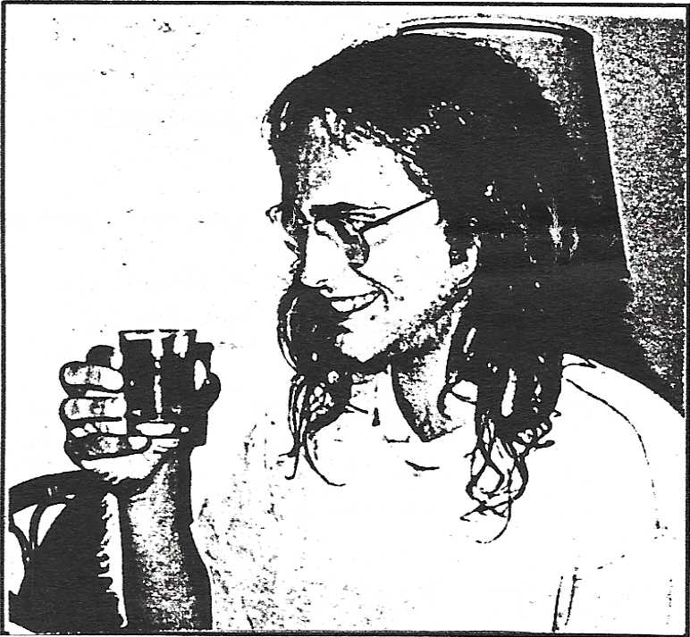
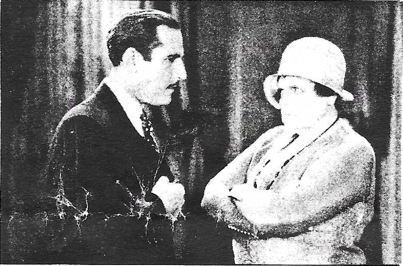
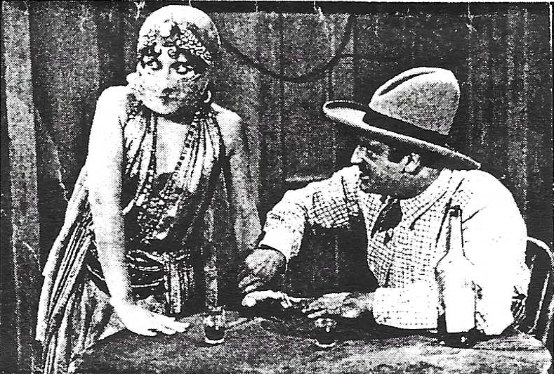
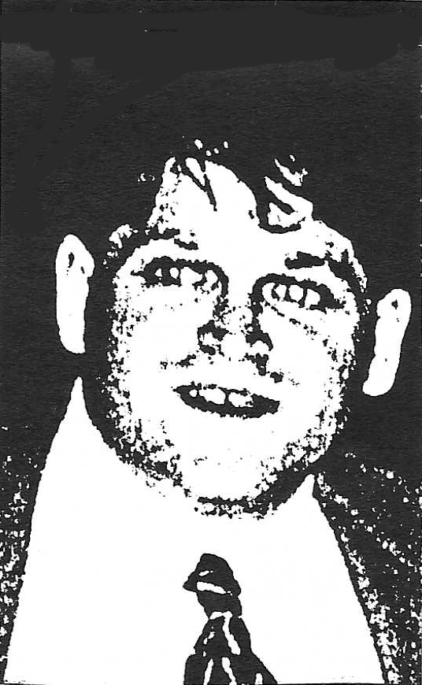

Twenty Reasons Why Bourbon is Better Than Beer
1. All, told, it is cheaper
2. Less of your friends will want some
3. Easier to smuggle into shows
4. Sweeter on the breath
5. Doesn't make you gaseous
6. Mixes with ginger ale
7. Can be drunk warm
8. Won't go flat
9. Gets you drunk easier
10. Hangover not as bad (comparatively)
11. Less calories
12. Less filling
13. One bottle equals 24 bottles of beer, hence easier to carry
14. and less to clean up
15. and No Deposit
16. Tastes better
17. Separates the men from the boys
18. Separates the women from the girls
19. Unites the men with the women
20. Puts the girls and boys to sleep

EDITOR'S NOTE: We actually received some feedback from a stranger recently (!) Naturally it was negative. The issue concerned the Procrastinator's condemnation of belly and eyebrow rings(2/95). However, our judgment was not passed arbitrarily. According to the "American Journal of Nursing" (5/94), 84% of all belly and eyebrow piercings end in infection and subsequent removal. So don't think that we are growing capricious or conservative. I think bellyrings are "cool", but I personally witnessed a friend's pain and suffering for months before she got hers removed, leaving permanent scar tissue and a hefty non-insurable prescription to antibiotics. -MAX
PROCRASTINATOR MILESTONES
ENGAGED: Enrico Krappe, current Feature Writer of the Procrastinator's sister publication "Sluggard", recently announced his engagement to perenially groggy social moth Conchisqua Jugo Naranja. The couple met while vacationing at the luxurious Maison Du Fromage D'Orteil in balmy Secaucus, NJ late last Fall. A December wedding is planned, but sudden disenchantment and a bitter, unrequited breakup is expected.

RETIRING: Procrastinator's long time companion and janitor Rufus Kolapsin announced his plans to retire "Probably when I turn 50" last week. Rufus, who is now 14, was told, "Less Talk, More Scrubbing" by a ruthless editorial staff.
EXECUTED: Convicted Serial Killer Hans Moleman was executed by electric chair last month after Homer ate his last meal.
INJURED: Contributing writer and pseudo-liberal Dirk Kirstin* suffered a sprained ego after a brief grapple with fate twenty years ago today, right after Sargent "Three-Toe" Feffer taught the Klan to slay. Neither the fallen bourbon maven nor the inappropriately mentioned and extremely esoteric fictional character answered incessant cold calls, which prompted a swift return to reason.
STILL STEAMED: Mud crony Dom Mottin still winces at the very mention of former flame and Internet Polyglot Lisa Loeb. The ill fated AOL romance, which smacks of a straight to video Billy Blanks movie, took place in my twisted mind early last December. "Several promises and sacrifices were made. I quit my job, I relined my conga with Aspergum and fed my roommate Hemorrid for that woman", said the stung minstrel, slowly twisting a matted lock of hair. The sordid affair struck bottom when Mottin found out that he was actually conversing with local armchair pundit (and star of Fox's new sitcom "Enemies") D'Harem Beret, who was posing as Loeb for reasons unobtainable by phone.
FED UP: Inchoate homeowner Max Vell and his stunning new wife Djongo are pretty damn sick of the infusion of bi-level haircuts on television. They led a chaotic two person demonstration on the Center for Embarrassing Social Trends in Washington, DC last Thursday, chanting "I fear for your children, Mr. Pennisheed!" and hurling hot yogurt at nearby teenagers. Local police were busy elsewhere.

MISSING: Decent Writer Cecily: We met but briefly at the Cafe-a-Go-Go in late June. You told me the Procrastinator was filled with refreshingly dry wit. Won't you put it in writing? or anything else you write would be great, and guaranteed to be printed! Yours, Erich
* Names changed to prevent further catering to already insufferable attention mongering
SCOTT LEHR TO LEAVE MUD BAND!!!
"If I had but two lives to give to the Mud, I would", lamented the famed entertainer "since I have but one, I am spending it all on snacks." When asked what kind of snacks, he would not reply. Certainly, you readers as well as us editors are deeply saddened by the departure of the Mud's red-faced ultra funky
frontman. The Mud themselves will deeply feel their their loss as their van ride banter will no longer be as full of zingy repartees. Most of all, Don Martin will be out of an opponent/confederate in the eternal battle of cheeky one-liners that fills up the Mud's quieter moments. We wish Scott well in his new career
directions. Among them are plans for a solo album, curbside street preaching and a series of educational video tapes on the art of ego massage.
